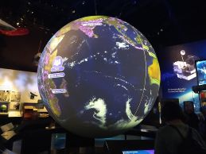
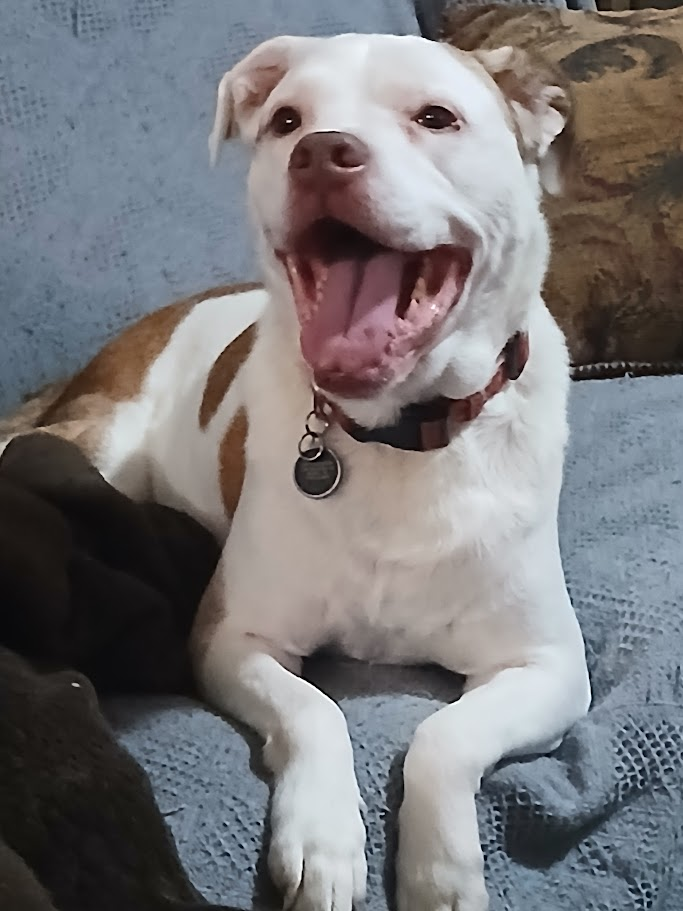
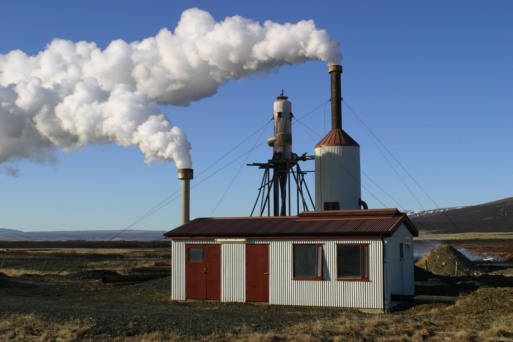
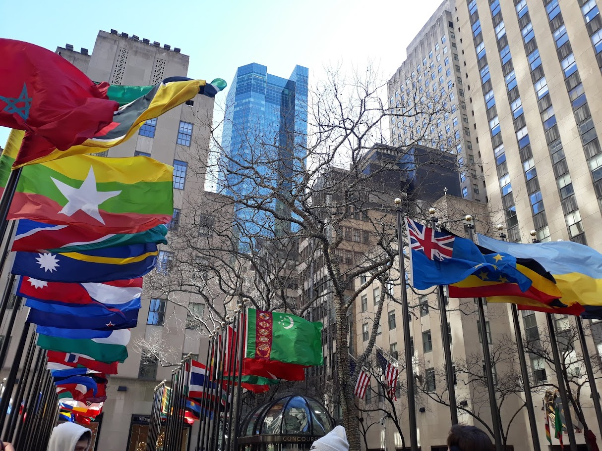

HT
The Happy Times
Jokes
Animals
Science
Economy
Cooking
Lifestyle
Culture
Sports
Climate
Politics
Search
Image taken by Savannah Sinor
How Spending Time Outdoors Could Change Your Life
Fresh air + sunlight = happiness
SAVANNAH SINOR

Image taken by Jaimi Turgeon
New Tech Changes the Game
A global coaliton of scientists make major breakthrough in renewable energy
SAVANNAH SINOR
Image taken by nattanan23 on Pixabay
National Economy Makes Rapid Recovery
Unemployment reaches lowest rate in decades, as new, high-paying jobs are created around the country.
SAVANNAH SINOR
Image taken by Savannah Sinor
Quick, Easy, and Healthy Fajita Recipe
This five ingredient fajita recipe will spice up your week night and leave you time to party afterwards.
SAVANNAH SINOR
Image taken by Savannah Sinor
Sporting Events More Accessible Than Ever
All sporting events across the country are now free for students and families' of athletes
SAVANNAH SINOR

Image taken by Savannah Sinor
Top Ten Cutest Dogs
You submitted your best furry friends and here are our top picks!
SAVANNAH SINOR
Image taken by teetasse on Pixabay
Political Polarization is Decreasing
For the first time in decades, political polarization is decreasing and political parties are agreeing more and more on policies.
SAVANNAH SINOR

Image taken by neanet on Pixabay
Enhanced Geothermal Power Plants Becoming More Popular
Enhanced geothermal power plants allow for previously unsuitable areas to harness geothermal power instead of relying on nonrenewable sources.
SAVANNAH SINOR

Image taken by Savannah Sinor
Town Square Displays Flags From Every Continent
Residents report feeling unexpectedly united by the display and that it feels like taking a mini world tour.
SAVANNAH SINOR
Image taken by Kranich17 on Pixabay
Top Ten Jokes of the Week
Here are the ten funniest jokes we found this week, from dad jokes to punchy one-liners.
SAVANNAH SINOR
Image taken by nattanan23 on Pixabay
National Economy Makes Rapid Recovery
Unemployment reaches lowest rate in decades, as new, high-paying jobs are created around the country.
SAVANNAH SINOR
Image taken by Savannah Sinor
Quick, Easy, and Healthy Fajita Recipe
This five ingredient fajita recipe will spice up your week night and leave you time to party afterwards.
SAVANNAH SINOR
Image taken by Savannah Sinor
Sporting Events More Accessible Than Ever
All sporting events across the country are now free for students and families' of athletes
SAVANNAH SINOR